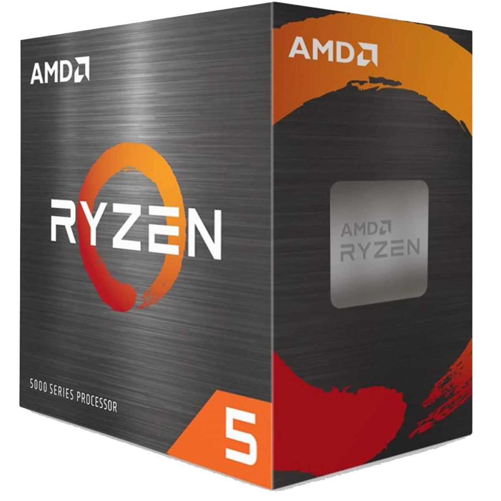
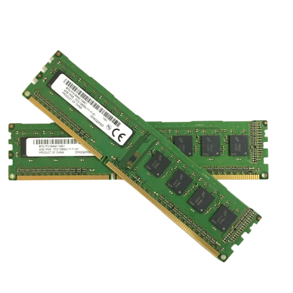

Maximize o seu desempenho seja trabalhando navegando ou assistindo o seu filme preferido com esse processador você pode tudo.
Mergulhe em todos os detalhes ao editar fotos e vídeos, obter jogos em HD incrivelmente suaves e transmitir seus programas favoritos vibrantes em 4KR HD.
Nos Computadores G-Fire com APU utilizamos Dois pentes de memórias ram, podendo ter mais que o dobro de performance comparado a utilização de um pente na máquina de mesma memória total.
As placas da PcWare proporcionam uma experiência incrível, seja com o foco em escritório
ou seja o foco em jogos.
Desfrute de uma fonte de 300W Bivolt, excelente para atender suas necessidades.